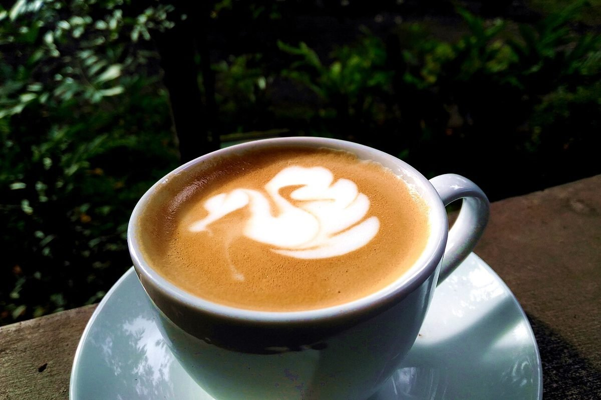
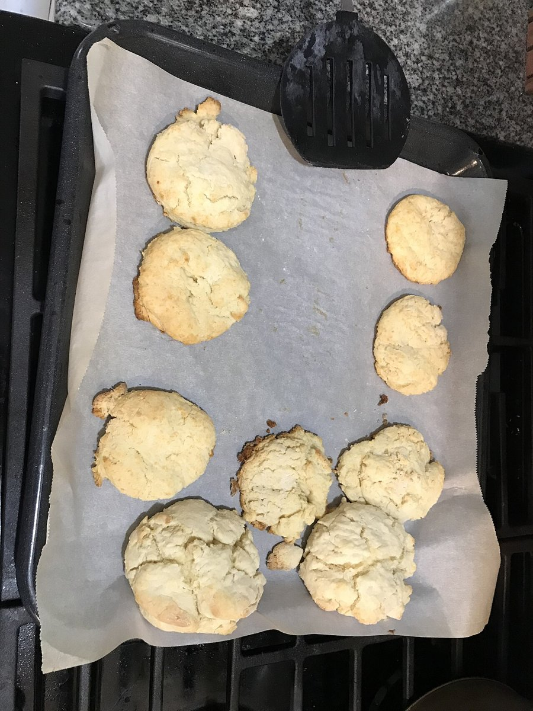

SAKU NOZAWA / CAFE
商店街のまんなかで、毎朝焼く自家製スコーンと北欧テイストの静かな席。ひと息つくための小さなカフェです。

Uchide CAFE は、長野県佐久市野沢の商店街に面したカフェです。2021年11月21日にオープンしたと紹介されています。

※店名「Uchide」の意味や、オーナーさまの想いについては公開情報で確認できていないため、このページでは触れていません。ご本人のお話をうかがったうえで追記できます。
以下は制作側で作成したイメージ例であり、実在のお客さまの声ではありません。
朝のうちに行くと、スコーンの香ばしい匂いがしていました。サクッとして、あとからふわっと。コーヒーとよく合います。
緑が多くて落ち着く店内。ソファ席でゆっくり本が読めて、買い物帰りのひと休みにちょうどよかったです。
カウンターから商店街を眺めながらのラテが好きです。ひとりでも気兼ねなく過ごせました。
掲載写真はすべてフリー素材(イメージ)であり、Uchide CAFE の実際の店内・料理ではありません。